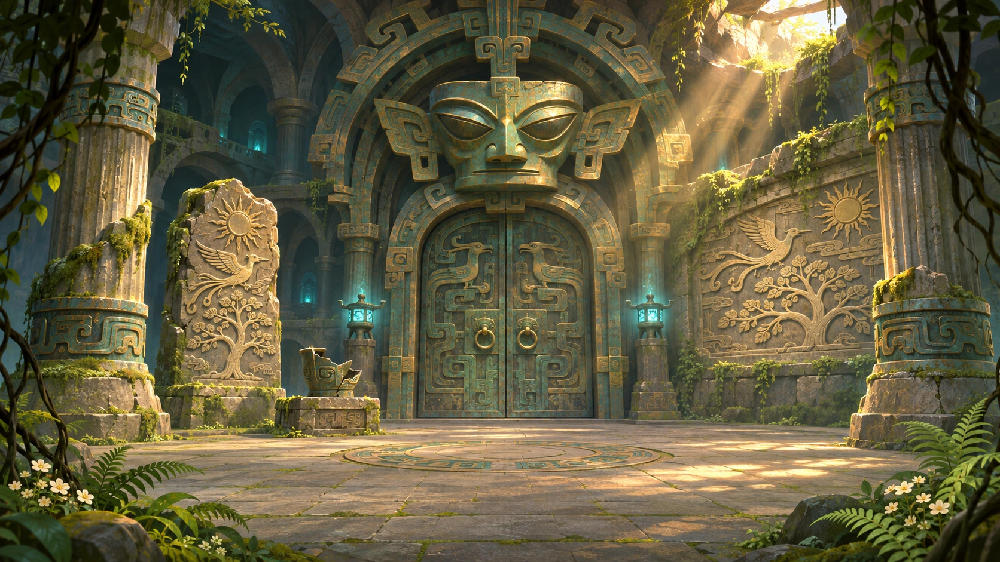

 ✦
✦🐾 破晓相拥 · 点击查看通关结算档案
FIELD RECORD / 01
青铜神殿前厅
当前调查
寻找三处遗迹线索
◉
遗迹档案 / 第五章 · 破晓通关结算
文明的另一种醒来
♡ ✦ 🐾 ✦ ♡
「从幽深前厅到破晓云海，最珍贵的不是独自揭开谜底，而是回头时你一直在我身边。」
浮起的不是亡者的灵魂，而是千年前的日光、飞鸟与树影。
林悦抱紧怀里摇尾巴的小家伙，终于听清了那段跨越千年的心跳。
古蜀迷踪：青铜之眼
THE EYE OF BRONZE · DAWN FINALE